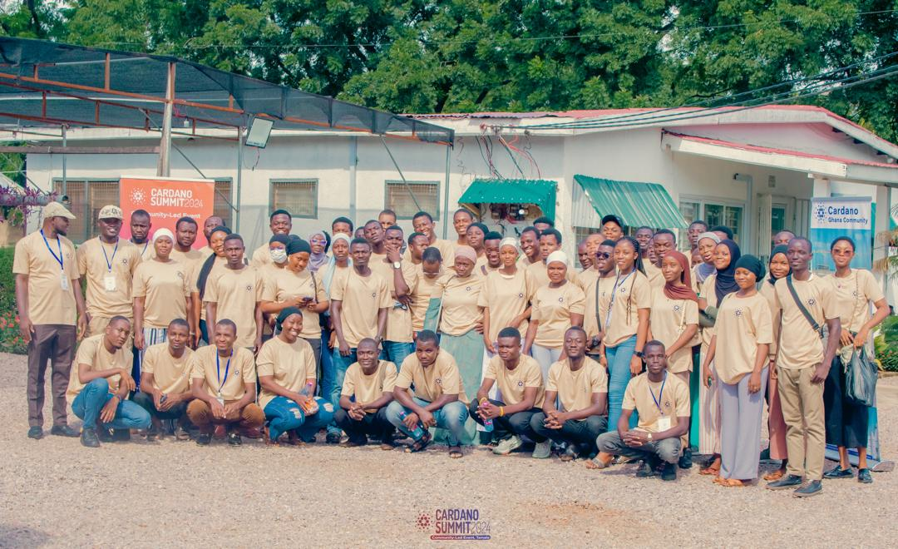

October 2024 was a month to remember in Tamale, Ghana. I had the privilege of participating in the Cardano
Summit 2024, hosted at Hopin Academy, a hub that has consistently been at the forefront of innovation,
technology, and entrepreneurship in Northern Ghana. The event was part of Cardano’s global summit series,
where communities across the world came together to celebrate, learn, and explore the future of blockchain
technology.
What made the Tamale edition so special was not only the global nature of the Cardano ecosystem but also the
local relevance it carried. It showed us that while blockchain may sound like a global trend, its real impact
starts at the community level—in places like Tamale, where innovation and creativity are growing rapidly among
young people.
A Gathering of Minds and Dreams
Walking into the venue, I could feel the energy in the air. The room was filled with a diverse group of
people: students, developers, entrepreneurs, blockchain enthusiasts, and community leaders. There was a shared
sense of curiosity and excitement. Everyone wanted to understand how Cardano’s blockchain ecosystem could
shape the future of finance, education, identity, and governance in Ghana and Africa at large.
One of the most inspiring aspects was the accessibility of the discussions. Even though blockchain is often
considered a highly technical subject, the facilitators and speakers broke down concepts into clear, practical
examples. It didn’t feel like we were just talking about technology; instead, it felt like we were exploring
tools for empowerment.
The Role of Cardano in Ghana – Insights from the Community Ambassador
The highlight of the summit for me was hearing from Mohammed Yakubu Mustafa, the Cardano Ghana
Community
Ambassador. His presence and words were a reminder of the importance of local leadership in global
movements.
He emphasized that Africa—and Ghana in particular—is uniquely positioned to take advantage of blockchain. Our
challenges in identity management, financial inclusion, and transparency are exactly the kinds of problems
that decentralized technologies like Cardano are built to solve.
Mustafa spoke passionately about Cardano’s vision: creating a blockchain platform that is sustainable,
inclusive, and adaptable to local needs. What struck me the most was his point that Ghanaians should not only
be consumers of blockchain solutions but also creators and innovators in the space. This resonated deeply with
me as a software engineering student who wants to build technology that makes a difference.
Themes That Stood Out
Several recurring themes came up throughout the discussions and networking sessions at the summit.
Financial Inclusion
Many people in Ghana and Africa still lack access to basic banking services. Blockchain provides a way to
create systems that are secure, transparent, and accessible to everyone, regardless of geography.
Digital Identity
In a world where proving identity is essential, blockchain could help create secure, tamper-proof digital IDs.
This could change how we access education, healthcare, and government services.
Sustainability
Cardano has made a name for itself as a blockchain that prioritizes energy efficiency. This is critical for
Africa, where we need technologies that don’t put unnecessary strain on resources.
Education and Youth Empowerment
The event emphasized that young people are not just the future—they are the present. The skills we develop
today will determine how Ghana positions itself in the global digital economy.
My Personal Experience
As a final-year Software Engineering student at C.K. Tedam University of Technology and Applied Sciences,
attending the summit was more than just an academic or professional activity—it was a personal turning point.
I realized that my journey in technology is not just about learning programming languages or building apps for
the sake of it. It’s about using these skills to solve real problems in my community. Listening to the
speakers and engaging with other participants helped me see how my passion for software development connects
with larger goals like financial inclusion, social impact, and digital transformation.
I also had the chance to network with other young innovators. The conversations we shared—about blockchain in
agriculture, decentralized education systems, and tech startups—were proof that Northern Ghana is bursting
with potential. It was refreshing to see people not only dreaming but also actively working on solutions.
The Impact of Hopin Academy
It would be impossible to talk about this event without acknowledging Hopin Academy. For years, Hopin has been
a catalyst for innovation and entrepreneurship in Tamale, providing training, mentorship, and a platform for
young people to learn and thrive. Hosting the Cardano Summit was yet another step in their mission to make
technology accessible and meaningful for everyone in the region.
Their ability to bring global initiatives like the Cardano Summit to Tamale shows the power of local
institutions in shaping global conversations. Hopin is not just a venue; it’s a movement that continues to
empower youth to think big and act boldly.
Looking Ahead
Leaving the event, I felt inspired, motivated, and more determined than ever to contribute to the blockchain
space. The summit was a reminder that technology is not about tools—it’s about people. It’s about finding
solutions that make life easier, fairer, and more inclusive.
As I look ahead, I am committed to continuing my journey as a software engineer who builds not just apps but
solutions that matter. I want to be part of the ecosystem that ensures Ghana is not left behind in the digital
revolution.
The Cardano Summit 2024 at Hopin Academy was more than an event—it was a call to action. A call for young
people like me to learn, innovate, and lead. And I am grateful to have been part of it.